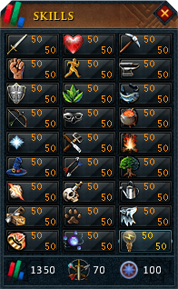

Skills and Quests Skills  All skills with the exception of Archeology.RS3 With the introduction of Archeology, there are now 31 different skills. Types of Skills Gathering skills One of the two types of skills are... Combat skills Of the two skills, combat skills are my favorite.